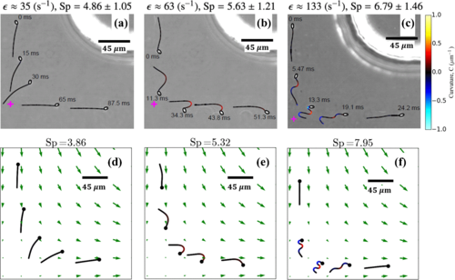

Developed a multiple myeloma (MM) Digital Twin model of overall survival (OS) to perform full
transcriptome in-silico loss-of-function experiments
AI causal modeling on the MMRF IA19 dataset using REFSTM has identified the first
causal link between the MCM complex and OS in MM patients.
Longitudinal transport is guided by stress in disordered viscoelastic flow and enhanced by the suppression of
elastic instability.
Our work illustrates an important transport mechanism for microalgae stemming from the
competition between viscophobic turning and viscous slowdown.
We demonstrate that flow geometry and elastic instability are tightly coupled for viscoelastic
flows in porous media.

Here we explore the effects of flow on the buckling dynamics of sperm flagella in an extensional
flow through detailed numerical simulations, which are informed by microfluidic experiments and
high-speed imaging.
In this work I contributed to the experimental rheological characterization of the yield stress
fluid.